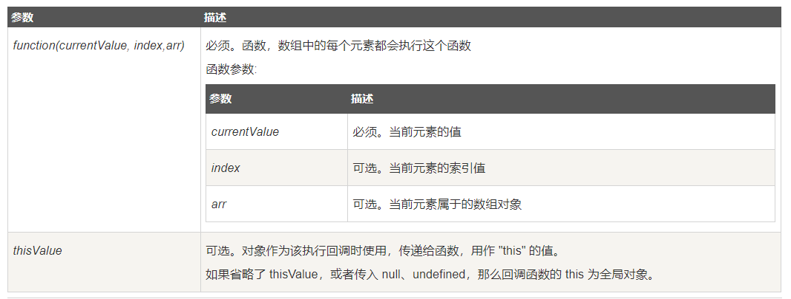

js这一块，我不讲基础，主要都是js的总结以及经常适用到东西，需要对js做到总结的应该有
对应参考文档然后你在学习js只有，jquery同时也是不可缺少的一个学习过程，简单来说，jquery就是js的升级版本， 更加便于js语法的实现，和后面的vue.js和react.js是一个性质得， 所以，在你开始学习js的时候，你要有一个比较清晰的概念，知道这个架构师那种类型的，什么特点，作用等等， 不要像我那会一样，经常学习完了之后，还不太清楚这个学了有什么用
jquery：M-V-C架构
Model（模型）：是应用程序中用于处理应用程序数据逻辑的部分。
通常模型对象负责在数据库中存取数据。(简单来说，就是管理和存数据的地方)
比如我们人类有一双手，一双眼睛，一个脑袋，没有尾巴，这就是模型，Model定义了这个模块的数据模型。
在代码中体现为数据管理者，Model负责对数据进行获取及存放。
数据不可能凭空生成的，要么是从服务器上面获取到的数据，要么是本地数据库中的数据，
也有可能是用户在UI上填写的表单即将上传到服务器上面存放，所以需要有数据来源。
既然Model是数据管理者，则自然由它来负责获取数据。
Controller不需要关心Model是如何拿到数据的，只管调用就行了。
数据存放的地方是在Model，而使用数据的地方是在Controller，
所以Model应该提供接口供controller访问其存放的数据（通常通过.h里面的只读属性）
View（视图）：是应用程序中处理数据显示的部分。。
(简单来说，界面上看到的东西)
Controller（控制器）：是应用程序中处理用户交互的部分
(简单来说，就是控制视图和数据之间的联系交互的)
Model-View-ViewModel(MVVM架构)
例如vue.js，react.js等最近兴起的架构思想均类似这样
modal和view的意思和上面一样，这里多出来的，就是ViewModal：
View绑定到ViewModel，然后执行一些命令在向它请求一个动作。而反过来，ViewModel跟Model通讯，告诉它更新来响应UI。这样便使得为应用构建UI非常的容易。往一个应用程序上贴一个界面越容易，外观设计师就越容易使用Blend来创建一个漂亮的界面。同时，当UI和功能越来越松耦合的时候，功能的可测试性就越来越强。
js中常用语法操作
字符串，数组，对象的操作
涉及到字符串，数组，对象等，无非就是这这三种类型的增删改查
字符串：
增加：
1、'ax' + 'bx' //这种是基于原字符串的修改
2、concat()： //concat：返回新字符串，原字符串不变
var str1 = 'Hello', str2 = ' World', str3 = '!';
console.log(str1.concat(str2)); // "Hello World"
console.log(str1.concat(str2,str3)); // "Hello World!"
修改：split分割："2:3:4:5".split(":") //将返回["2", "3", "4", "5"]
查询：indexOf
var s = 'hello, world';
s.indexOf('world'); // 返回7
s.indexOf('World'); // 没有找到指定的子串，返回-1
对象和数组对象：
对象和数组都可用的删除：delete ax.bx
数组的修改：
push，unshift， //添加，最后一项和第一项，原数组修改
pop，shift， //删除，最后一项和第一项，原数组修改
array.push(ax)， //用法都一样
concat()：数组上的使用和字符串上的时候类似，都是不改变原数组，
在新数组上加以改变，有点类似于push
let ax = [1,2,3]; let bx = [3,5,6];
ax.concat(bx); //[1,2,3,3,5,6]
数组最为常用的删除方法，删除数组某一项：splice 注意：这个会返回新数据，改变原数据
arr.splice(index) ; :从index下标位置开始向数组后面截取，直到最后，返回截取的所有元素。
arr.splice(index,num) ; :从index下标位置开始向数组后面截取num个元素，返回截取的所有元素。
let ax = [1,2,3,4,5];
document.write(ax.splice(2, 1)); //删除ax中的第二项
高阶函数
map和reduce的使用
这个map的使用其实和forEach有些相识，在实际使用中，主要是针对数据的操作
测试map平方：
再看reduce的用法。Array的reduce()把一个函数作用在这个Array的[x1, x2, x3...]上，这个函数必须接收两个参数 ， reduce()把结果继续和序列的下一个元素做累积计算
[x1, x2, x3, x4].reduce(f) = f(f(f(x1, x2), x3), x4)
测试reduce数组从头加到尾部：
class Index {
constructor() {
}
//map的使用测试：平方
mapTest(array) {
return array.map((ctn) => {
return ctn * ctn
})
}
//reduce的使用：用于叠加
reduceTest(array) {
return array.reduce((x, y) => {
return x + y;
})
}
}
let init = {
//高阶函数
IndexTest: function () {
let ax = [1, 3, 5, 7, 9];
let takeCtn = new Index();
$('.mapCtnTest').text('测试数据：' + ax);
document.getElementById('mapCtn').innerText = `map得出结果：${(takeCtn.mapTest(ax)).map(String)}`; //map用于数组转字符串也非常方便
$('#reduceCtn').text('reduce结果' + takeCtn.reduceTest(ax));
}
};
filter
filter也是一个常用的操作，它用于把Array的某些元素过滤掉，然后返回剩下的元素
科普一波：在vuex中的getters用于计算state的情况的时候，用的最多的就是filter过滤方法
最常用的写法：
return filter((ctn, index, arr) => { return *** })；接受方式和map类似
注意： filter() 不会对空数组进行检测。
注意： filter() 不会改变原始数组，属于返回一个新数据的情况
测试数据过滤偶数：
sort
这个压根就是es6里面的：Array.prototype.sort()的排序方法，用于数据排序
sort()方法也是一个高阶函数，它还可以接收一个比较函数来实现自定义的排序。
而对于sort()来说，他不关心比较的过程，只关心比较的结果，例如：两个元素x，y
认为x > y，return 1
认为x === y, return 0
认为x < y，return -1
而sort就是根据1,0，-1这个结果去控制排序，//可以这样去记：-1是往前扔，0中间，1向后扔
简单的来说，不要直接使用sort()，最好通过自定义方法实现，不然容易掉到坑里面
sort由大到小比较：
//sort：测试sort方法
sortTest(array) {
return array.sort((x, y) => {
if (x < y) {
return 1;
} else if (x > y) {
return -1 //可以这样去记：-1是往前扔，0中间，1向后扔
} else {
return 0
}
});
}
Array数组其他方法
其中Array还包括很多我们其他常用的，比如最常见的forEach，以及find
注意: find() 对于空数组，函数是不会执行的； 注意: find() 并没有改变数组的原始值。
array.find(( ctn, index, arr ) => { 自定义函数 })；参数和map，forEach类似
递归函数
说白了，递归就是函数自己调用自己
主要：使用递归函数，必须要有结束的条件，不然浏览器会崩掉
测试5!：
//递归：简单的阶乘
Factorial(num) {
if (num === 1) {
return num
} else {
return num * this.Factorial(num - 1);
}
}
takeCtn.Factorial(5)
上面都是属于简单的思维，对于递归函数的使用，可以看看这个参考文件
参考文献：https://blog.csdn.net/PrisonersDilemma/article/details/89451120
简单来说，对于递归函数的使用，可以分为四个步骤：
1、寻找递推关系：简单来说，就是分析递推之间互相的关系
2、寻找临界条件：就是直接分析相互条件的差异和结合
3、总结递归表达式：然后整合到一起
4、改写成递归函数：然后写成函数即可
//测试一个递归的案例，求斐波那契数列第n项的总和
//首先斐波那契数列是1,1,2,3,5,8,13,21… 即第n项是前两项的和
//这里需要求第n项到前面的总和
//先确定第n项的值
checkN(n) {
if (n === 1 || n === 2) {
return 1
} else {
return this.checkN(n - 1) + this.checkN(n - 2);
}
}
//知道第n项后，求第n项外加之前的值
sunCtn(n) {
if (n === 1) {
return n
} else {
return this.checkN(n) + this.sunCtn(n - 1);
}
}
闭包函数和定义
在js中，递归和闭包的概念都是属于一个难点，但是你如果对其比较详细的了解掌握，在js编程上会有很大收获
之前我们说到，递归函数属于方法中调用方法，那么闭包我对他的理解就是，方法中存在方法， 只有 具体调用到方法后才会执行方法里面存在的方法
闭包的特性：当一个函数返回它内部定义的一个函数时，就产生了一个闭包，闭包不但包括被返回的函数，还包括这个函数的定义环境，
var generateClosure = function() {
var count = 0;
var get = function() {
count ++;
return count;
};
return get;
};
var counter1 = generateClosure();
var counter2 = generateClosure();
console.log(counter1()); // 输出 1
console.log(counter2()); // 输出 1
console.log(counter1()); // 输出 2
console.log(counter1()); // 输出 3
console.log(counter2()); // 输出 2
上面这个例子解释了闭包是如何产生的： counter1和counter2分别调用了generate-Closure() 函数，生成了两个闭包的实例，它们内部引用的 count 变量分别属于各自的运行环境。我们可以理解为，在 generateClosure() 返回 get 函数时，私下将 get 可能引用到的 generateClosure() 函数的内部变量（也就是 count 变量）也返回了，并在内存中生成了一个副本，之后 generateClosure() 返回的函数的两个实例 counter1和 counter2 就是相互独立的了。
https://www.haorooms.com/post/js_bb